Créditos das fotos
As fotos de carne usadas nos modelos vêm do Wikimedia Commons, com licença livre. Obrigado aos autores.
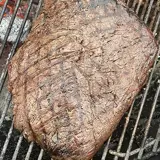
Picanha na grelha
“GrilledPicanha.jpg” · Darubrub · CC BY-SA 4.0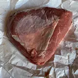
Peça de carne crua
“20241123 Rindsuppe 004 (54250401408).jpg” · Tauralbus · CC BY 2.0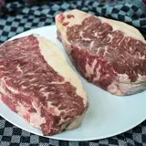
Bifes marmorizados
“Australisches Rumpsteak.jpg” · Alice Wiegand · CC BY-SA 4.0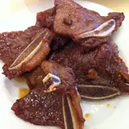
Costela em tiras
“BBQ Ribs @ Regal Palace on Yonge (5612309318).jpg” · andrewarchy from Toronto, Canada · CC BY 2.0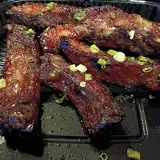
Costelinha
“Fried Barbecued Ribs, Baton Rouge.jpg” · Paul Lowry · CC BY 4.0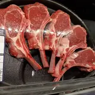
Carré de cordeiro
“HK 九龍塘 Kln Town 又一城商場 Festival Walk mall shop Taste by 百佳超級市場 ParknShop Supermarket goods December 2020 SS2 65.jpg” · Sahume Kin Luona · CC BY-SA 4.0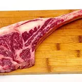
Tomahawk
“Tomahawk steaks 03.jpg” · Pannet · CC BY-SA 4.0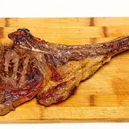
Tomahawk grelhado
“Tomahawk steaks 06.jpg” · Pannet · CC BY-SA 4.0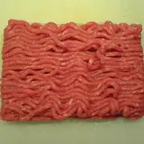
Carne moída
“Hakket-oksekoed.jpg” · Gajda-13 at Danish Wikipedia · CC BY-SA 3.0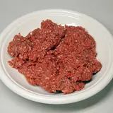
Carne moída no prato
“Hackfleisch-1.jpg” · No machine-readable author provided. Rainer Zenz assumed (based on copyright cla · CC BY-SA 3.0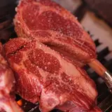
Carne na brasa
“Churrasco00003.jpg” · Leonardo Sakaki · CC BY-SA 4.0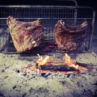
Costela fogo de chão
“Churrasco03.jpg” · Márcia Cristina Machado · CC BY-SA 4.0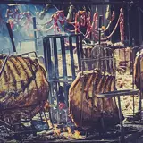
Fogo de chão
“Churrasco01.jpg” · Márcia Cristina Machado · CC BY-SA 4.0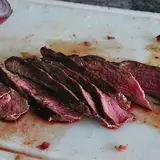
Picanha fatiada
“Picanha (14759358544).jpg” · Christian Benseler · CC BY 2.0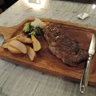
Bife na tábua
“A angus beef steak with potato slices and vegetables.jpg” · Geoffreyrabbit · CC BY-SA 4.0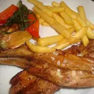
Frango assado
“Churrasco de Torreblanca.jpg” · Juan Emilio Prades Bel · CC BY-SA 4.0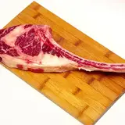
Tomahawk na tábua
“Tomahawk steaks 02.jpg” · Pannet · CC BY-SA 4.0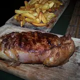
Bife ancho
“ArgentinaSteak.jpg” · Niels Elgaard Larsen - User: (WT-shared) Elgaard at wts wikivoyage · CC BY-SA 4.0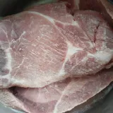
Carne suína
“HK food ingredient red meat frozen pork chop raw butt steak October 2021 SS2 006.jpg” · Presixlla MOON · CC BY-SA 4.0- Linguiça
“Linguiça calabresa, São Paulo (3243 12).jpg” · Wilfredor · CC0 - Peça de músculo
“Beef shank.jpg” · Dragontail ys · CC BY-SA 4.0 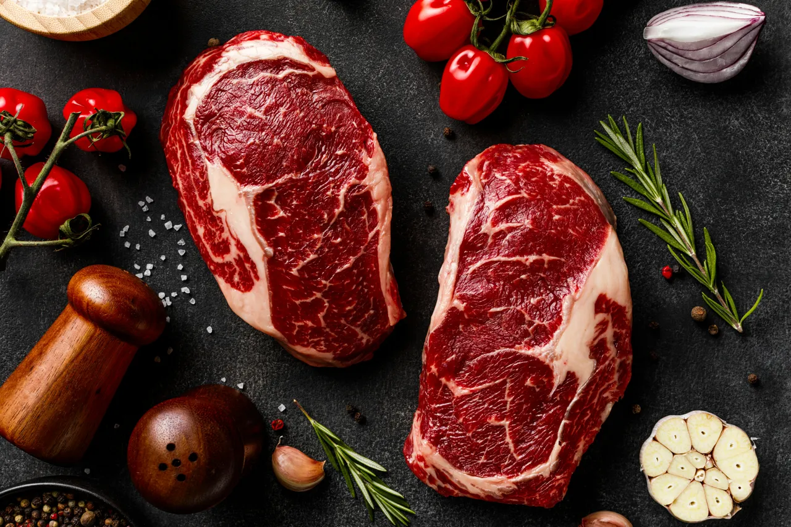
Bife ancho (promoção)
Foto de Sergey Kotenev no Unsplash · Licença Unsplash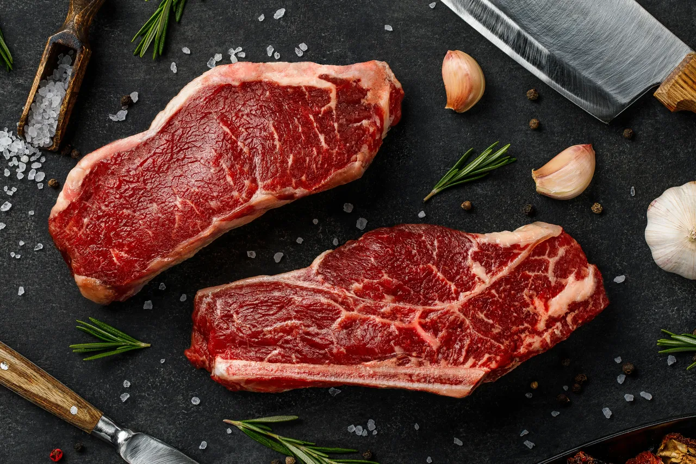
Contrafilé (promoção)
Foto de Sergey Kotenev no Unsplash · Licença Unsplash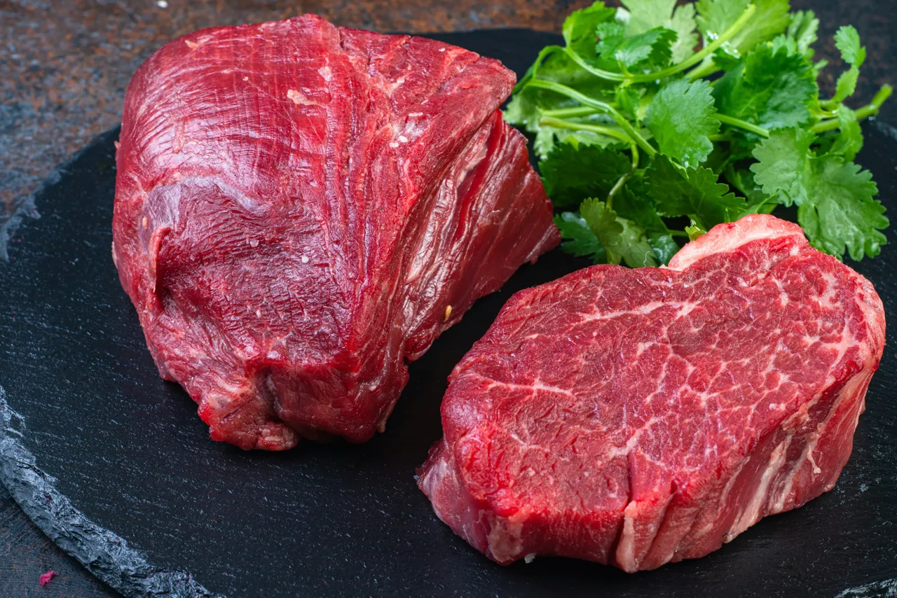
Filé mignon (promoção)
Foto de David Foodphototasty no Unsplash · Licença Unsplash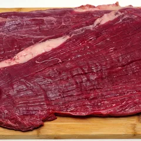
Fraldinha crua
“Flank steaks.jpg” · Pannet · CC BY-SA 4.0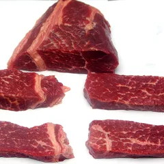
Peças bovinas cruas
“Topside steak.jpg” · Pannet · CC BY-SA 4.0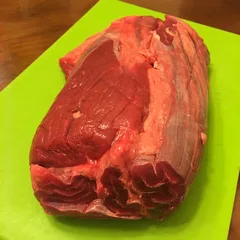
Músculo cru
“Beef shank.jpg” · Dragontail ys · CC BY-SA 4.0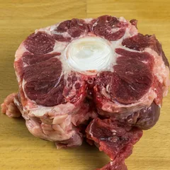
Rabada
“Oxtail-93256.jpg” · Raimond Spekking · CC BY-SA 4.0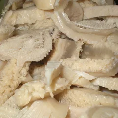
Bucho
“Trippa2.jpg” · Lissen · Public domain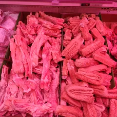
Tripa
“HK SKD TKO 將軍澳 Tseung Kwan O Plaza TKO Mart market shop 佳寶食品 Kai Bo Food Supermarket January 2023 Px3 Frozen food 牛筋 beef tendon 豬大腸 Pork large intestines.jpg” · Norswaiu HFAUDNC · CC BY-SA 4.0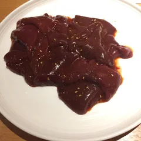
Fígado
“焼肉用牛レバー.jpg” · Ldays · CC BY-SA 4.0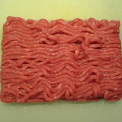
Carne moída crua
“Hakket-oksekoed.jpg” · Gajda-13 at Danish Wikipedia · CC BY-SA 3.0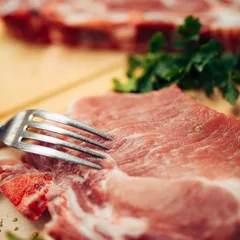
Bisteca suína
“Close-up of raw pork chops on a wooden cutting board with fresh herbs ready for cooking.jpg” · Shixart1985 · CC BY 2.0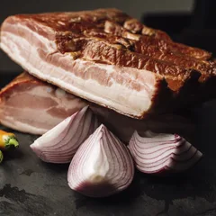
Panceta
“Freshly prepared raw pork belly with red onions and chili peppers.jpg” · Shixart1985 · CC BY 2.0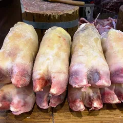
Pé suíno
“Pig's trotters.jpg” · Bapak Alex · CC BY-SA 4.0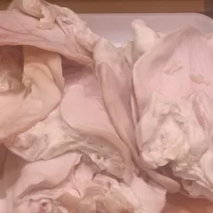
Orelha suína
“Chilled pig ears.jpg” · François Nguyen · CC BY 2.0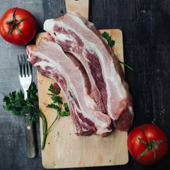
Bacon
“Two slices of raw bacon and parsley on the wooden board. Two tomatoes next to it.jpg” · Shixart1985 · CC BY 2.0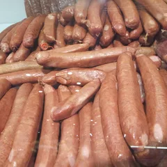
Linguiça fresca
“Linguiça calabresa, São Paulo (3243 12).jpg” · Wilfredor · CC0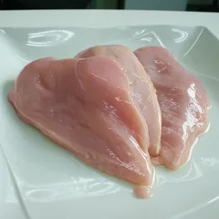
Filé de frango
“Raw chicken slices.jpg” · kakyusei · CC0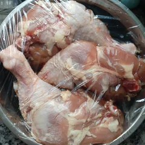
Coxa e sobrecoxa
“HK food raw chicken legs February 2020 SS2 02.jpg” · Mahea Poonam · CC BY-SA 4.0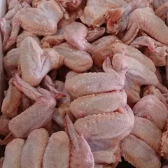
Asa de frango
“Raw chicken wings.jpg” · ProjectManhattan · CC BY-SA 3.0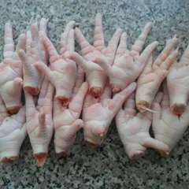
Pé de frango
“Processed Frozen Chicken Feet & frozen chicken Paws.jpg” · Lukemarie21 · CC BY-SA 4.0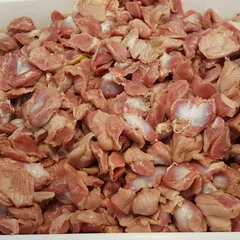
Moela
“Chicken gizzards.jpg” · Harald the Bard · CC0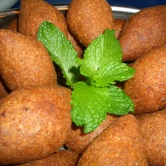
Kibe
“Kibbeh3.jpg” · Bazel · CC BY-SA 3.0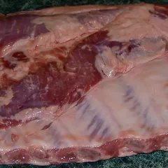
Costelinha suína
“Raw pork spareribs.jpg” · Mendaliv · Public domain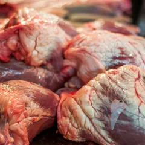
Coração bovino
“Beef heart anymore.jpg” · Wilfredor · CC0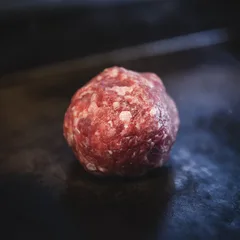
Almôndega crua
“Meatball 01.jpg” · Kamil · CC BY-SA 4.0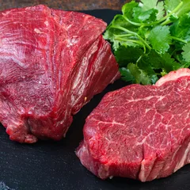
Filé mignon
Foto de David Foodphototasty no Unsplash · Licença Unsplash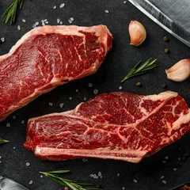
Contrafilé
Foto de Sergey Kotenev no Unsplash · Licença Unsplash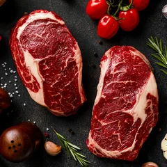
Bife ancho
Foto de Sergey Kotenev no Unsplash · Licença Unsplash

.jpg){kind=link}

.jpg){kind=link}


.jpg){kind=link}


.jpg){kind=link}